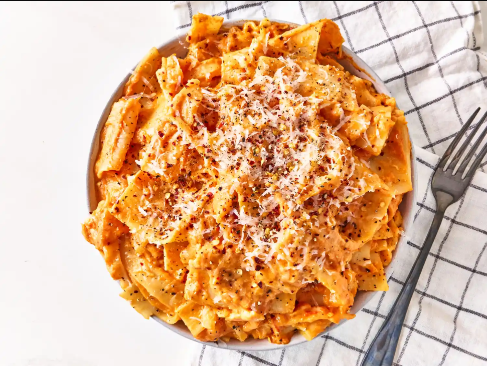

Home
Pulled from
Cheesy Lasagna Sheet Pasta

Ingredients
- 8 ounces lasagna noodles, broken in half
- 1 (24-ounce) jar of pasta sauce
- 8 ounces shredded whole milk mozzarella cheese
Directions
- Bring a large pot of lightly salted water to a boil. Cook lasanga noodles in the boiling water, stirring occasionally, until tender yet firm to the bite, 10 to 12 minutes.
- Strain noodles and return to the pot. Add pasta sauce and cook on medium heat until sauce is heated through, about 5 minutes.
- Add cheese and stir until cheese is melted. Serve immediately.